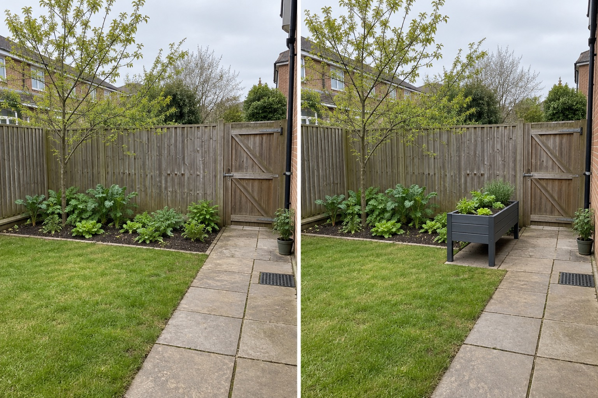

Keep one ground reference
Use the existing bed to understand native soil, water and working posture.
Raised beds can change working height and imported soil conditions, while in-ground beds retain direct contact with the existing site. Neither is automatically better. Compare the gardener, soil test, drainage, water demand, crop plan and route first.
Editorially reviewed September 10, 2026.
This AI-generated comparison is visual inspiration only. It does not verify dimensions, safety, local rules, products, plants, costs, construction or professional conclusions.

Use the existing bed to understand native soil, water and working posture.
Test reach and route with a portable planter before building a permanent system.
Record soil volume, watering, access and seasonal care rather than judging appearance alone.
University of Georgia Extension comparison compares drainage, soil amendment and site-quality tradeoffs and recommends soil testing when uncertain. University of Maryland Extension guidance defines raised beds and advises assessing existing soil quality before adding material. These sources frame the decision; they do not certify this pictured layout.
The in-ground bed, existing plants, tree, lawn, path, gate, drain, levels, weather and camera remain unchanged. The portable planter is a visual trial, not a construction or accessibility specification.
Use an appropriate local laboratory when fertility, contamination, pH or amendment decisions matter.
Compare how the real ground and a trial container wet and dry; do not infer drainage from appearance.
Use the intended gardener, tools and watering method; obtain an access assessment where needed.
Estimate verified soil volume, irrigation, repairs, replacement and labor without inventing prices.
Avoid building before soil testing, blocking the gate, assuming raised means accessible, using unknown materials, filling over a drain, promising yield or overlooking faster drying and maintenance.
Stop before excavation, importing soil, treating timber, altering drainage or making accessibility or food-safety claims. Use local soil, horticultural and construction advice.
Only for some goals and sites. Soil, drainage, reach, water, materials, roots, crops and maintenance determine the tradeoff.
They can change drainage conditions, but the result depends on fill, depth, underlying ground and outlet conditions.
Height alone does not establish accessibility. Approach, reach, route, edge, tools and the individual user all matter.
No. Dimensions require real reach, crop, soil, structure, route and site measurements.
Upload a level, wide photo that keeps access, drains, boundaries, services and mature features visible.
AI concepts require independent verification of site conditions, safety, local rules and professional requirements before physical work.